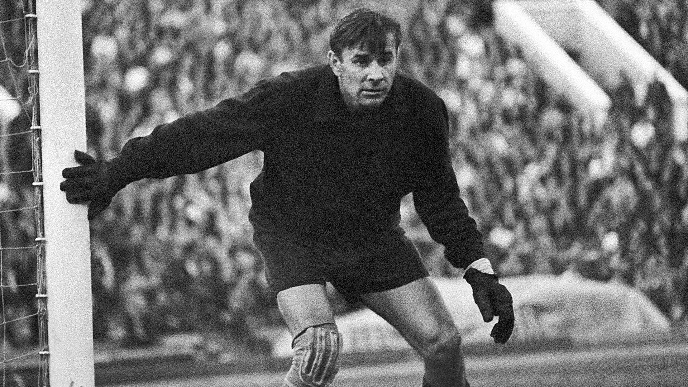
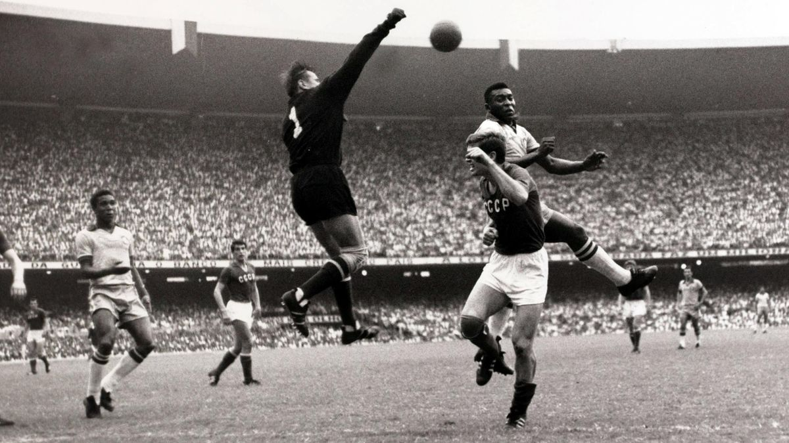
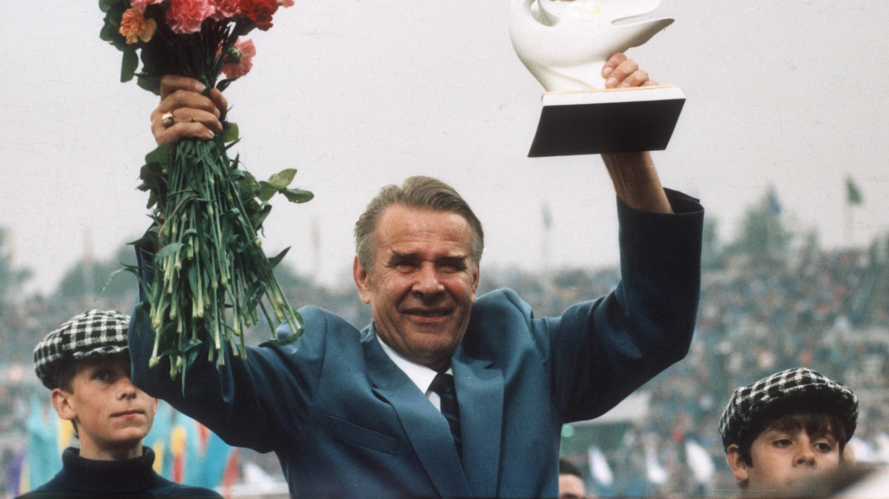

Lev Yachine : la légende du football soviétique
Lev Ivanovitch Yachine, né le 22 octobre 1929 à Moscou et décédé le 20 mars 1990, est considéré comme l'un des meilleurs gardiens de but de tous les temps. Surnommé "l'Araignée noire", il a marqué l'histoire du football grâce à ses prouesses sur le terrain et à sa personnalité hors du commun.
Jeunesse et formation
Lev Yachine est né dans une famille ouvrière et a grandi dans les quartiers populaires de Moscou. Passionné de sport dès son plus jeune âge, il pratique le football et le hockey sur glace, ainsi que l'athlétisme. Son talent de gardien de but est vite repéré et il est recruté à l'âge de 16 ans par le Dynamo Moscou, l'un des clubs les plus prestigieux de l'Union soviétique.
Carrière sportive
Lev Yachine commence sa carrière professionnelle en 1949 au Dynamo Moscou, où il s'impose rapidement comme titulaire indiscutable. Son agilité, sa rapidité et son sens de l'anticipation font de lui un gardien de but exceptionnel. Il remporte avec son équipe cinq titres de champion d'Union soviétique (1954, 1955, 1957, 1959 et 1963) et trois Coupes d'Union soviétique (1953, 1960 et 1963).
Le point culminant de sa carrière est la Coupe du monde 1966 en Angleterre, où il est élu meilleur gardien de but du tournoi. Grâce à ses arrêts spectaculaires, il permet à l'équipe soviétique de se hisser jusqu'en demi-finale, où elle est éliminée par l'Allemagne de l'Ouest. Lors de ce tournoi, il réalise une performance mémorable lors du match contre la Corée du Nord, en arrêtant notamment un penalty.
Lev Yachine est également connu pour avoir révolutionné le poste de gardien de but en introduisant de nouvelles techniques d'entraînement, comme le travail spécifique sur les sorties aériennes et sur les plongeons. Il était réputé pour son professionnalisme et son sérieux, et passait des heures à étudier les vidéos de ses adversaires pour mieux les connaître.
Vie personnelle
Lev Yachine était un homme discret et réservé, qui se consacrait entièrement au football. Il était marié à Valentina Timofeeva, qui était elle-même joueuse de volley-ball et qui est devenue par la suite entraîneuse. Ils ont eu deux enfants, une fille et un garçon.
Après sa carrière sportive, Lev Yachine est resté impliqué dans le football en tant qu'entraîneur et consultant. Il est décédé en 1990 des suites d'un cancer de l'estomac.
Hommages et distinctions
Lev Yachine est considéré comme l'un des plus grands gardiens de but de l'histoire du football. Il a été élu à trois reprises meilleur gardien de but du monde par la FIFA (1963, 1964 et
